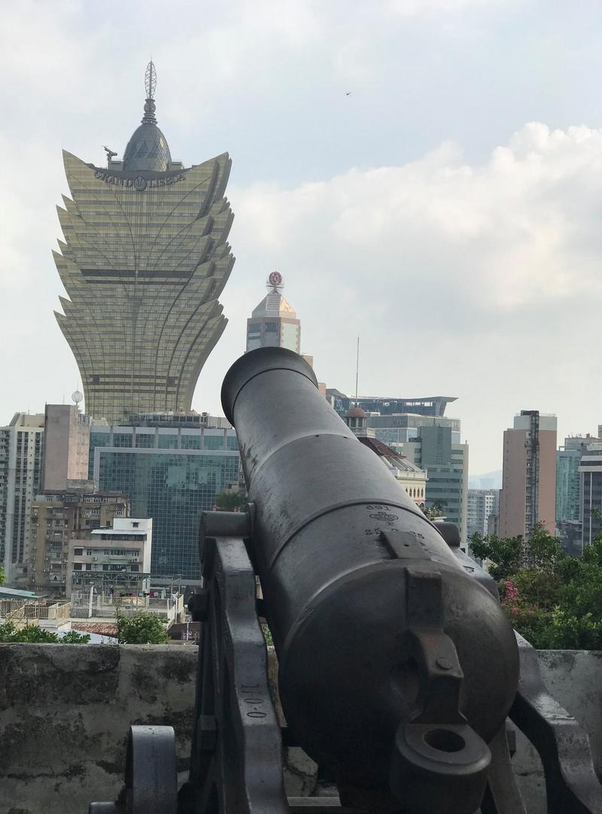
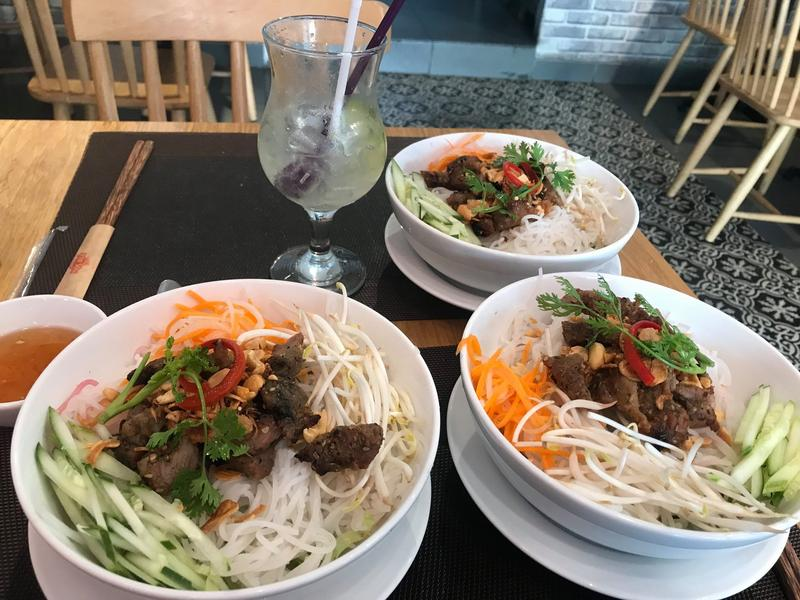
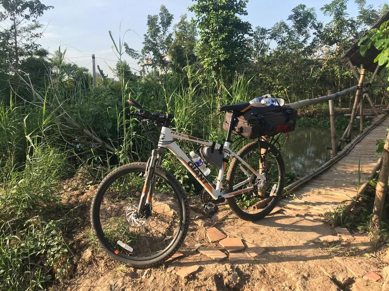
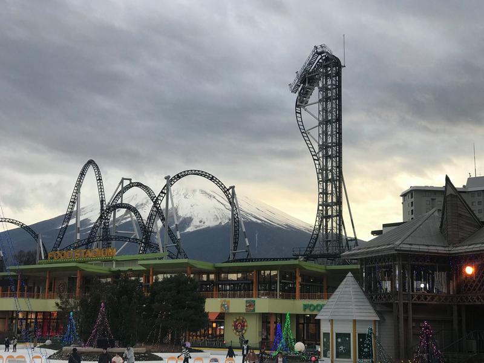
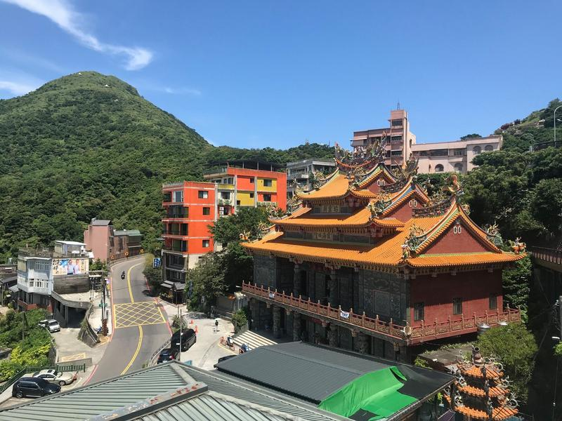
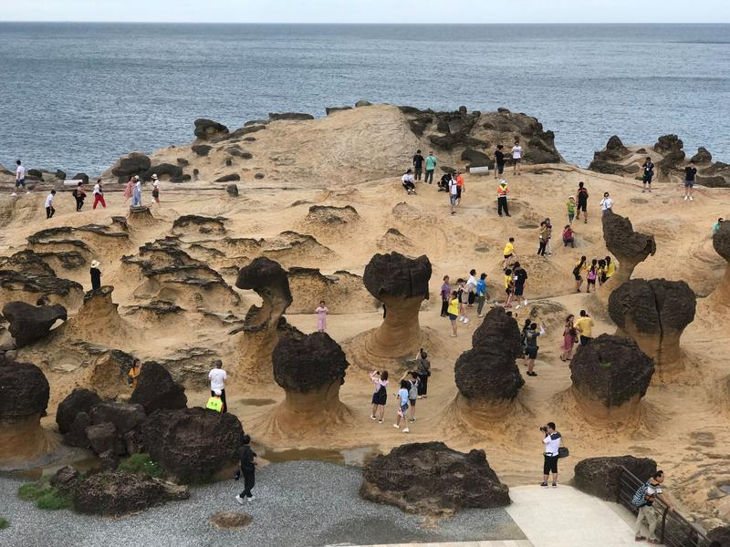
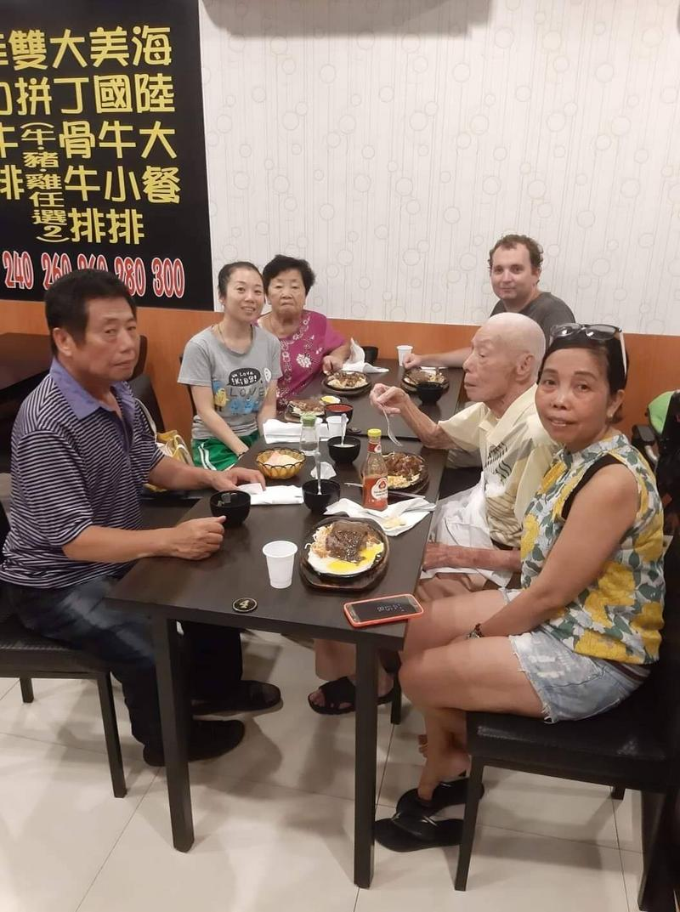

2 roky na cestě kolem světa léto 2019
Jak vypadal můj druhý rok na cestě kolem světa.
Je 10. 7. 2018, na den přesně 1 rok od doby, kdy jsem opustil Evropu. V den svých 30. narozenin jsem se rozhodl pro dlouhou cestu kolem světa, koupil si jednosměrnou letenku do Mongolska a po dalších 100 dnech tam odcestoval. Stále vlastním 85 věcí, které dohromady váží kolem 7 kilogramů a všechny mohou na palubu letadla.
První rok jsem zakončil v hlavním městě Jižní Koreje, a tak tady musí i ten druhý začít. Soul je obehnán horami a téměř každé ráno jsem na vrcholku některé z nich pozoroval východ slunce. Potkal jsem tam několik zajímavých lidí, mimo jiné i Kima, vlastníka expediční firmy, který před 40 roky, tedy v době, kdy byla ještě Severní Korea mnohem bohatší než ta Jižní, obchodoval s Československem.
Proč vlastně do Soulu? Četl jsem několik knih od lidí, kterým se podařilo utéct ze Severní Koreje a chtěl jsem je poznat osobně. Po delším hledání se mi to nakonec podařilo a mohl jsem strávit celý den s ženou, která se tam narodila.
Když byly před několika lety v KLDR poslední hladomory, rozhodla se, že z Koreje uteče. S pomocí převaděčů se dostala přes hranice a byla prodána Číňanům. V Číně si musela 3 roky vydělávat jako šička, než měla dostatek peněz, aby se vyplatila (oblečení, které měla na sobě, si udělala sama). Poté musela s pomocí dalších převaděčů procestovat celou Čínu až na jih a dále za úplné noci jít několik dní přes pralesy v Laosu. Kdyby ji někde chytli, byla by poslána zpět do KLDR, pravděpodobně rovnou na popraviště. Poté už zbývalo překročit Mekong a v Thajsku přijít na první policejní stanici, kde získala mezinárodní ochranu. Poslední část cesty byla už jednoduchá, stačilo přeletět z Bangkoku do zpět do Koreje, ale tentokrát už do té Jižní, a pomalu se adaptovat na život v kapitalismu. Její tvář se fotit nesměla, protože má stále KLDR stále část rodiny, bratra, kterému posílá peníze a kterého bude podobná cesta čekat také.
Navštívit hranici mezi Severní a Jižní Koreou, Panmundžom, nejstřeženější místo světa, byl další důvod, proč jsem chtěl v Soulu zůstat. Říká se, že je to poslední místo, kde je ještě studená válka. Dnes je to oblíbený turistický cíl (vojáci takto nestojí celý den, ale jen když přijedou turisté), nicméně když jsem vyrostl na seriálu M*A*S*H, jak bych mohl tohle místo vynechat, že :-)

Tady může člověk na pár minut navštívit jednu z místností a vstoupit na území Severní Koreje, aniž bych musel mít víza. Vojáci hlídající dveře do Severní Koreje vypadají drsňácky!
Korejské jídlo. Když před téměř dvěma roky má čínská přítelkyně překročila s převaděči ilegálně hranice do Vietnamu, musel jsem ji ukrývat v hotelu. Pouze když byla tma, mohli jsme se tajně proplížit kolem recepce a zapadnout do nejbližší restaurace u hotelu. A tak jsem objevil korejské restaurace.
Korejské kuchyně se postupně stala má nejoblíbenější ze všech asijských. V Soulu je velké množství restaurací otevřených 24 hodin denně, přílohy i pití jsou dokonce zdarma. Obzvláště kimči (to červené), stojí za to. Korejci ho jí u každého jídla několikrát denně a říká se, že je to nejzdravější jídlo, které existuje.
Soul je také město plné moderní architektury a každý mrakodrap je umělecké dílo...
… jenže já přijel do Koreje v létě, v době, když bylo 40 stupňů a venku se přes den nedalo žít. A tak jsem se rozhodl obrátit režim a spát přes den. Díky tomu jsem viděl všechna místa, která jsou normálně narvaná turisty, úplně prázdná.
Příbytky z kartonových krabic. Metra a různé podchody se během noci stanou noclehárny pro lidi bez domova. Večer si postaví své obydlí z kartonu a brzy ráno, než začnou lidé chodit do práce, zase místo opustí.
Protože jsem byl už z množství lidí na severu trochu unavený, rozhodl jsem se odcestovat na jih. Víte, trochu si užít moře na nějakou lonely beach a hlavně si odpočinout od lidí …
Z Koreje jsem se přes Japonsko přesunul až na úplný jih Tchaj-wanu, do národního parku Kenting. Protože má Tchaj-wan na délku jen něco přes 500 km, tak vyloženě svádí k tomu, aby ho člověk procestoval nějak netradičně. A protože ho už mnoho lidí objelo na kole nebo na motorce s helmou Hello Kitty, rozhodl jsem se, že ho zkusím od nejjižnějšího místa po to nejsevernější pěšky přejít.
A tak jsem se vydal na cestu. Potkával jsem třeba typické tchajwanské domy ...
.... pár buddhistických chrámů …
… či atypické semafory na přechodech pro chodce. Tenhle 4 KB panáček je nejmocnější a nejrespektovanější bytost v celé východní Asii. Pokud se rozhodne, že zůstane červený, život v Japonsku či Tchaj-wanu se kompletně zastaví!
Leč jsem si vybral období, které nebylo pro podobné dobrodružství úplně nejlepší a po dlouhou dobu vlastně šlo jen o to, zda je venku právě “torrential rain” nebo “heavy torrential rain”. To mě moc nebavilo a tak jsem se po 100 km v Kaohsiungu rozhodl, že to zkusím někdy jindy.
Trest za vzdávání přišel okamžitě. V restauraci jsem si objednal něco, na co jsem alergický a začal se nafukovat tak, že bych mohl zbytek cesty na sever proletět jako vzducholoď. Po dlouhém přemlouvání sebe sama jsem se vydal do nemocnice a celá cesta do nemocnice zabrala mnohem víc než samotné vyšetření v ní. Tchajwanský zdravotní systém je totiž jeden z nejlepších na světě a celá návštěva od registrace až po vyšetření a předání léku zabralo jen pár minut času.
Abych poznal trochu blíže Tchajwance, našel jsem si bydlení v jedné typické tchajwanské rodině. Když jsem dorazil na místo, našel jsem místo bez oken, klimatizace i bez internetu a dokonce i bez dosahu mobilního signálu. Nějakým záhadným způsobem jsem se v polospánku proklikal až na tuhle nabídku, kterou bych si jinak nikdy nevybral (jako pracovní prostředí), a rezervoval ji. No a nakonec se z toho vyklubalo nejlepší Airbnb, které jsem kdy měl. Joy se mi věnovala skoro každý den a díky ní jsem mohl Tchaj-wan poznat tak, jak bych ho nikdy sám nepoznal.
Prošli jsme spolu několik taipeiských nočních trhů a Joy mi popisovala, co jím. Upřímně řečeno, v Asii je mnohdy lepší raději nevědět. Tohle je třeba rýže s prasečí krví, jedna z nej pochoutek nočních trhů.
Zbylé dva týdny v Tchaj-wanu jsem strávil cestováním po okolí a po různých národních parcích, především 40 km pěšky soutěskou Taroko stálo za to.
Macau byla poslední (ne)země ve východní Asii, kde jsem ještě nebyl. Z plánovaných čtyřech dní se však kvůli jednomu z největších tajfunů za poslední roky stalo jen jedno odpoledne.
Macau, Las Vegas východní Asie.

Z Macau jsem se přesunul do Hong Kongu, kde jsem strávil skoro měsíc na pěti různých místech. Hned první den jsem se ubytoval poblíž stanice Tsim Sha Tsui, což je vyhlášená čtvrť, kde rozhodně v HK nebydlet. Že budu v dobré společnosti jsem pochopil hned po příjezdu, kdy se mi snažili okolní obyvatelé prodat všechny možné druhy drog či žen všech vyznání a národností. Zde jsem se skupinkou okolních obyvatel pozoroval, jak se místní snaží prolézt ze zaseklého výtahu.
Hong Kong je plný street artu …
… dvouposchoďových tramvají …
… buddhistických soch Vladimira Iljiče Lenina …
… a je zde samozřejmě i velké množství paneláků a mrakodrapů. Hong Kong je dokonce město s nejvyšší hustotou mrakodrapů na světě.
Tyhle stavby, miniaturní byty uprostřed obrovských sídlišť, mě fascinovaly. Protože je Hong Kong oblíbenou zastávkou pro fotografy, našel jsem si nějaká zajímavá, fotogenická místa k návštěvě. A tady jsem také viděl, jakou sílu má dnes Instagram. Běžné sídliště, kde ale proudí stovky a stovky lidí a zabírají plochu určenou hrajícím se dětem, aby se vyfotili s barevnou omítkou.
Po celé dva roky, každý měsíc, za mnou jezdila má čínská přítelkyně 睿. Někdy přes půl Asie jen na jednu noc, někdy na celé dva týdny. Přestože má mnohem složitější podmínky než třeba běžný Čech a do všech navštívených zemí musela mít vízum (což občas znamená, že jí musí kamarádky poslat peníze na účet, aby mohla prokázat výši majetku), tak to vždy šlo.
Když měla třeba navštívit Japonsko, které pro ní bylo extrémně drahé, přišla na to, že je možné nakupovat bez daně, pokud člověk nakupuje draze. A tak zalarmovala několik divizí své početné armády čínských kamarádek, přijala od nich objednávek jak běžný český e-shop o Vánocích, v Japonsku nakoupila zboží za půl milionu korun a v Číně ho pak kamarádkám prodala. Pro ně bylo mnohem levnější díky tomu, že tak obešla clo, a sama si nechala ušetřenou daň, která ji pokryla všechny náklady v Japonsku.
Zkus říct Číňance, že něco nejde!
Společně jsme si vyzkoušeli, jak se bydlí v miniaturních bytech uprostřed Hong Kongu …
… nebo ve 38. patře výškových hotelů.
Když nám začal být Hong Kong příliš těsný, přeletěli jsme o pár tisíc kilometrů na jih Thajska. Půjčili si motorku a několik dní projížděli okolí Phuketu a Krabi.
Motorka nám dala spoustu volnosti, a tak jsme mohli každý den pozorovat západ slunce …
… symetrickou krajinu …
… a vyzkoušet všechny možné zázraky thajské kuchyně. Tady dokonce s posvěcením V. Putina!
Nakonec jsme jihem projeli několik tisíc kilometru. Musím říct, že ježdění na motorce mě baví a po 4000 km ve Vietnamu a Thajsku začínám uvažovat o tom, že bych si na ní udělal i řidičák.
Přesto mám raději kolo a tak jsem se vrátil do Vietnamu s tím, že si jedno koupím a projedu s ním až do Indie.
Ve Vietnamu jsem byl za poslední 2 roky už 10x a mám tu zemi rád. Kde jinde dostanete jídlo zabalené ve stránkách z fyzicky? Najíte se a přitom se i něco naučíte! Geniální!
I když je pravda, že někdy je ta komunikace s Vietnamci trochu náročnější. Staré cestovatelské pravidlo říká, že pokud dostanete ve Vietnamu menu, nikdy nesmíte říct číslo jídla, které si chcete objednat. Musíte název jídla přečíst. Protože jinak dopadnete jako já a místo čísla 3, které jsem si objednal, dostanete číslo jedna, ale 3x.

“Jakub, měl bys jít ven a koupit si večeři, za chvíli přijde déšť a pak už to nepůjde!”, říkala mi má vietnamské kamarádka, u které jsem bydlel. Já jsem její upozornění ignoroval, protože jsem byl už asi měsíc hrdým vlastníkem deštníku.
O 3 hodiny později jsem otevřel branku, vstoupil na cestu a najednou se propadl do 30 cm hluboké řeky. Stačilo pár hodin deště a celé Ho Chi Minh City byl pod vodou. Za chvíli vypadla elektřina, všude tma, obvyklý rachot motorek není nikde slyšet. Pouze vyjící psi v okolí. Scéna jako z hororu!
Zatímco v Mongolsku jsem zažil, když v jedné z jurt nový život začal, tady ve Vietnamu jsem zažil konec jiného, když zemřel dědeček v rodině, kde jsem zrovna bydlel.
Po pár dnech v Ho Chi Minh City jsem si konečně pořídil nové kolo a vydal se s ním na jih směrem do delty Mekongu...

… po různých zapadlých cestách, z nichž velká část nebyla ani na mapě. Jednou se mi stalo, že jsem ztratil telefon. Vypadl mi z brašny a já jel dále. Všiml si toho však jeden Vietnamec, telefon vzal, naskočil na motorku, dojel mě a telefon mi vrátil.
No a když už jsem na kole nemohl, jednoduše jsem sedl na loď a nechal chvíli Vietnamky, ať pádlují.
Zhruba dva týdny na jihu Vietnamu jsem bydlel v různých chýších.
Pár dní jsem bydlel i u jednoho vietnamského učitele matematiky, přičemž každý večer u něj smrděl koncem. Jednou mi třeba půjčil motorku a já na ní jel 120 km na sever do Tra Su Cajuput, podle mě nejhezčího místa v deltě Mekongu. Když jsem se vracel už za šera, zjistil jsem, že mi půjčil motorku bez funkčních světel. A tak jsem musel za úplné tmy projíždět ulicemi, svítit si telefonem a doufat, že nespadnu do Mekongu. Když jsem zázračně dojel živý až k mým chýším, vše bylo zamčeno, a tak jsem si dal ještě závěrečné prolézání přes bambusové dveře. Jak praví staré vietnamské přísloví: “Když půjčíš motorku bez světel cizinci a on se do večera nevrátí, asi je mrtvý, tak to neřeš, zamkni branku a jdi v klidu spát.”
Když už jsem byl téměř u hranic s Kambodžou, potkala mě jedna nepříjemná věc a přestal mi částečně fungovat notebook, můj pracovní nástroj. Dojel jsem tedy do většího města a dal ho Vietnamcům, ať mi ho opraví. Po hodině mi ho vrátili s tím, že už bohužel nefunguje vůbec a že budou potřebovat tak 3 týdny na opravu. A tak jsem cestu přerušil a vydal se do jediné země ve východní Asii, do Japonska, kde jsem si jistý, že mi pomohou hned. A pomohli.
Takhle nějak vypadá typická Japonka. Jedná se o decentní podzimní outfit, který je určen pro posezení s přáteli nebo pro podávání odpoledního čaje.
V Japonsku jsem byl za poslední 2 roky už 5x a strávil jsem tam 7 měsíců, velkou část z této doby jsem bydlel u Kaoru v Ósace.
Kaoru mě toho hrozně moc o Japonsku naučila. Třeba jsem pravidelně (na moji žádost) dostával seznamy jídel, které Japonci jí a které mám vyzkoušet. Byl to trochu jako obřad, až to všechno sním, stanu se prý pravým Japoncem!
Taky jsem od ní dostal nejintenzivnější školu japonské ekologie. Tady se třídí odpad snad do 10, 11, 12 ... nebo možná ještě více druhů košů. Vše nejprve rozdělit, podle druhu materiálu, pořádně vydrhnout, aby ten odpad byl čistý a špína nebyla špinavá, a pak to bylo možné teprve vyhodit do správného koše. Každý týden mi třídění zabralo třeba 1 hodinu a v obchodech jsem si vybíral jídlo jen podle toho, jestli jeho obal půjde snadno vyhodit.
Na Štědrý den za mnou přijela 睿, a tak jsme mohli trávit Vánoce v Kusatsu, v jednom z nejhezčích japonských měst v Japonských Alpách.
Než jsem Japonsko navštívil, chtěl jsem se alespoň jednou svézt v legendárních shinkansenu. Nakonec se mi to podařilo více než 100x a během 7 měsíců jsem v nich najezdil 45 tis. km, tedy více než je obvod zeměkoule.
Jaké to je, když fungují v zemi rychlovlaky? Ráno jsem nasedl na první shinkansen, ujel třeba 1000 km, strávil den v daném místě a pak se zase 1000 km vracel zpět do Osaky. Je to stejné, jako kdyby si člověk jeden den udělal výlet z Prahy do Benátek, prošel si je a vrátil se zase večer zpět do Prahy. Druhý den pokračoval z Prahy do Paříže, koupil si bagetu, strávil den ve městě a zase se vrátil na večer do Prahy. A třetí den si udělal třeba podobný výlet do Stockholmu.
Ptáte se, jak vypadají japonské rychlovlaky uvnitř? Hello Kitty motivy v některých z nich by neměly překvapit.
Díky několika JR passům jsem tak mohl navštívit krásné kjótské uličky …
… Akihabaru, místo s největší koncentrací bizarních věcí na metr čtvereční ...
… nebo Fuji Q pod stejnojmennou horou a vyzkoušet si, jaké to je řítit se střemhlav k zemi.

Po dvou a půl měsících v Japonsku jsem pokračoval do Bruneje, což je údajně nejnudnější země na světě. Že to není úplně nejnavštěvovanější země se potvrdilo hned na začátku, když mi paní na celnici potvrdila, že jsem první Čech, kterého viděla, zatímco druhá jí prozradila, že živého Čecha tady už jednou viděla. Jsme ohrožený druh!
Interiér jedné z mešit. Zatímco třeba v Malajsii jsou narvané turisty, ty brunejské zely prázdnotou. Jeden z imámů mi poradil, ať sem přijdu o týden později, že se tady bude v poledne modlit sultán a že si s ním pak můžu udělat selfie, že mi to domluví!
Kampong Ayer, největší plovoucí vesnice na světě.
Já chtěl ale Brunej zažít nějak jinak než běžný turista.
A tak jsem odjel na venkov, kde jsem přišel na to, že se tam opravdu nedá nic moc dělat. A tak jsem si alespoň půjčil kajak a vyjel na moře. Pár hodin jsem si plul podél pobřeží a při své nešikovnosti dvakrát do vody sletěl, ale mně to tolik nevadilo. Stačilo doplavat na břeh a zase do loďky vlézt. Po krásném dni na moři jsem kajak vrátil, šel se projít po okolí břehu. A pak najednou před sebou vidím krokodýla. Nebyl velký, mohl mít metr či metr a půl, ale podle jeho zubů jsem jasně poznal krokodýla. Úplně mě ten pohled paralyzoval. Na světě neexistuje zvíře, ze kterého bych měl větší strach, než je právě krokodýl. Nedokážu si představit, že bych ho viděl v tom kajaku, už ten pohled by mě spolehlivě zabil. Vrátil jsem se do guesthousu a zeptal se, zda to skutečně byl krokodýl a oni mi řekli, že jo, že jich je tady hodně a že mám dávat na ně pozor.
Zažít Brunej jinak než běžný turista!
Když jsme se s 睿 poznali, neuměla anglicky, tedy jen pár slov jako “Hlad! Jíst! Spát!”. Během chvíle se ale dokázala anglicky velmi rychle naučit, avšak si vytvořila vlastní angličtinu, kde je jen jedna předložka, jeden minulý čas a jeden budoucí a tak podobně. O tom by sice mohla dělat přednášky na TEDxu, napsat knihu a udělat sérii školení, ale pro běžný život se to moc nehodí. A tak jsem se rozhodl, že se naučím čínštinu, ostatně mi ona sama už dříve jednu učebnici čínštiny napsala. Prostě jak praví české přísloví: “Když nemůže hora k Mohamedovi, musí Mohamed k hoře.”
V Kuala Lumpur jsme si vytvořili docela fajn studijní podmínky :-)
Po pár dnech studia jsem odletěl do Kota Kinabalu a nadšeně rozeznával znaky, které už umím, až jsem vešel do restaurace, objednal si jídlo, protože jsem v jeho názvu rozpoznal znak 牛 pro krávu (což znamená, že se tu podává hovězí maso) a šel se posadit. Po chvíli na mě přes celou restauraci zařvala servírka: “Mǐfàn?!” a rukou naznačila misku. To bylo poprvé, kdy jsem něčemu v čínštině rozuměl a věděl jsem, že se ptá, zda chci misku s rýží. Řekl jsem jí, že ano a po chvíli váhání a sběru odvahy jsem na ní také zařval: “Fúwùyuán, qǐng gěi wǒ yī bēi shuǐ!,” neboli “Servírko, dej mi prosím sklenici vody!”, což byla jedna z frází, kterou jsem se už dříve naučil. Ona pokývala hlava a sklenici mi přinesla. To mě šokovalo. Ona mi opravdu rozumí, co jsem ji v čínštině řekl! Přišlo mi to, jako kdybych rozluštil nějakou vzácnou šifru. Vlastně jsem čekal, že každou chvíli vrazí do restaurace komando čínských vojáků, zamračených jak z titulky New York TImes, a odvedou mě někam, kde už o mně už nikdo nikdy neuslyší, protože vím moc.
Čínština se mi hodila i na Semporně, kde jsem viděl jedny z nejkrásnějších plážích. Na některé se lze dostat jen organizovaně ve skupině a já si vybral tu s Číňany. Protože jsem byl jediný Evropan široko daleko a dokázal jsem porozumět několika frázím v čínštině, rozhodl kapitán, že hlavní řeč platby bude čínština. Když jsme dojeli na jednu zastávku, porozuměl jsem, že tam budeme dvě hodiny, a tak jsem se vzdálil docela daleko od lodi, zatímco čínští pasažéři sbírali odvahu na to, aby seskočili do metrové hloubky. Když jsem se však vrátil pryč, loď byla fuč. Lidé z další lodi mi řekli, že ti mí už odjeli. Ale že se MAYBE vrátí a ať si jdu zaplavat. A tak jsem čekal ještě půl hodiny, než malajský kormidelník změnil směr a vrátil se zpět a bezpečně mě dovezdl až do přístavu. Důležité poučení: pokud plujete s Číňany, naučte se spolehlivě rozpoznat “20 minut” a “2 hodiny”!
Protože mi byl zážitek s krokodýlem málo, tak jsem se vydal ještě na řeku Kinabatangan s průvodci, kteří v džungli celý život žijí, na tři dny podnikat noční treky nebo za úplné tmy hledat s baterkou krokodýly v řece. Všude je naprostá tma a ticho, člověk jen pomalu pojíždí po řece a hledá oči krokodýlů na hladině. Postupně se k nim přibližuje a přibližuje, než se krokodýl ožene (a) nebo zmizí pod hladinou.
Po Malajsii jsem se vrátil zpět do Japonska navštívit poslední dvě místa, kde jsem ještě nebyl: Hokkaido a Okinawu. Protože mi na jihu bylo už moc teplo, vydal jsem se na nejsevernější místo Japonska do Wakkanai a postupně ho sjížděl až na jih. Při návštěvě nejvyšší hory Hokkaido Mt Asahidake mi došlo, že není vůbec špatné mít i něco jiného než kraťasy :-)
Krajinky uprostřed Hokkaido.
Okinawa byla poslední místo, které jsem chtěl ještě v Japonsku navštívit. Japonský bonbonek na závěr! Na Okinawě údajně žije nejvíce lidí přes 100 let a dlouhou dobu jsem podezíral Okinawu, že je to možná nejlepší místo k životu na světě vůbec.
Můj let mi však bohužel zrušili a z plánovaného týdne se staly jen 4 dny, které jsem strávil na ostrovech Kerama, na jednom z nejhezčích míst k potápění. Půjčil jsem si vybavení na šnorchlování a vydal se na moře. A ten mořský svět, to se nedá popsat! Viděl jsem i velké mořské želvy. Dlouhé minuty jsem si prohlížel tu nádheru...
A pak zpozoruji, že ke mně někdo přijel na skútru. “Tady nemůžete plavat! Je to strašně nebezpečné! Musíte jít do vyhrazeného prostoru!” Tak jsem se vrátil zpět na pláž a hledám ten vyhrazený prostor, než mi dojde, že je to ten malý úsek v délce jednoho olympijského bazénu. No co se dá dělat, tak jdu alespoň tam...
Než ke mně opět přijel plavčík na skútrů s tím, že tady vůbec nemůžu takto plavat, že je to strašně nebezpečné plavat bez záchranné vesty. To už jsem si myslel, že si dělá legraci, vždyť je tam maximálně metr a půl vody! A tak všichni, kteří chtějí do vody, musí mít záchrannou vestu, plavat v malém prostoru velikosti klasického bazénu a být neustále pod dohledem několika plavčíků. Japonsko.
Z Japonska jsem se vrátil na na Tchaj-wan a rozhodl jsem se, že budu pokračovat v tom, co jsem začal už minulý rok, a přejdu ostrov pěšky. A tak jsem před pár dny dojel na nejsevernější bod Tchaj-wanu, Fuguijiao, a začal dlouhou cestu na jih...
… kolem hor ...
… buddhistických chrámů …

... či geologických parků.

Nejzajímavější je ale samozřejmě potkávání lidí. Během dvou let jsem bydlel u 20 čínských rodin. Zde jsem dostal pozvání na oběd od od paní, která má 85 let.

Na a zatím jsem došel do Taichungu, který je zhruba uprostřed Tchaj-wanu. Během měsíce bych rád došel i zbytek a pak bych chtěl na kole dojet z Vietnamu do Kuala Lumpur pro čínské vízum a pak strávit nějaký čas právě v Číně, střední Asii a přesunout se do arabského světa. Mám ale v plánu změnit celý koncept a vrátit se k původní myšlence, se kterou jsem odcestoval, a to že budu sbírat portréty zajímavých a až jich bude tisíc, tak se vrátím. Stay tuned :-)